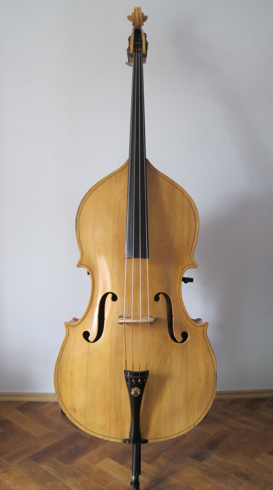
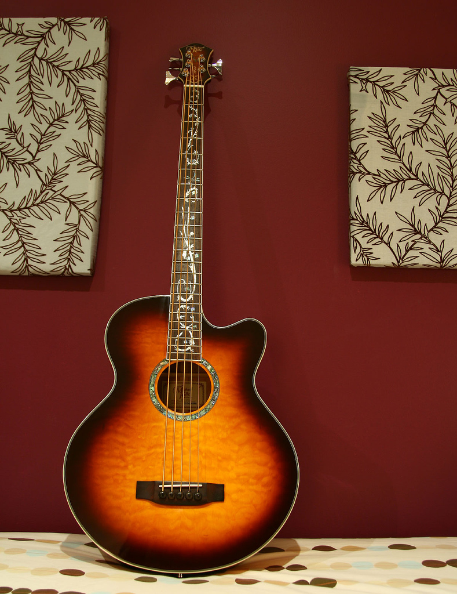
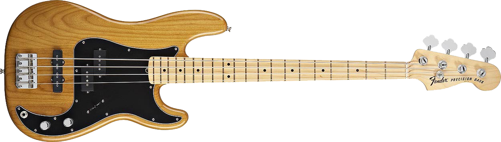
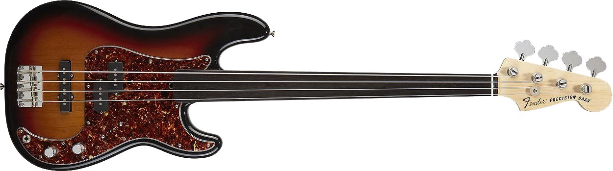
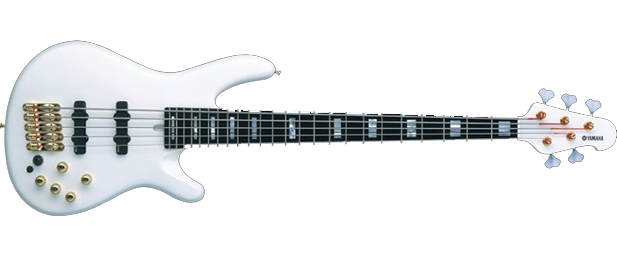
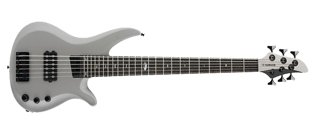
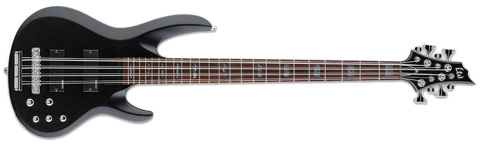
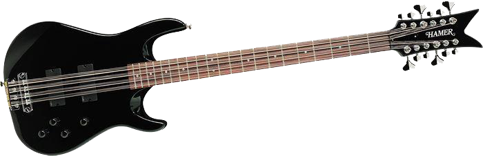

“None of us wanted to be the bass player. In our minds he was the fat guy who always played at the back.” Paul McCartney
The bass guitar is the forgotten instrument in the musical world. Bass players are often nameless, standing in the shadows of lead singers and guitar players. However, there are a few bass players who have managed to step into the limelight:
Just like bass players aren't often showcased, bass guitars often pale in comparison to the attention given to electric guitars. On this page, we celebrate all types of bass guitars. We will highlight the many different types of basses and the styles they are best used for.
The upright acoustic bass is akin to the symphonic double bass. Instead of being played with a bow while sitting, the player stands up straight and plucks the strings with the fingers. The playing surface of this bass is fretless, meaning that the player can produce any pitch and playing in tune relies on the player's skill and knowledge. This style of bass is most popular in the musical styles of jazz, acoustic country, and rockabilly.
The acoustic bass is essentially an acoustic adaptation of the electric bass. Smaller than the upright bass, the player is typically seated and the bass rests in the player's lap. The bass is also fretted, meaning that metal bars (or frets) are embedded in the playing surface so that exact notes can be played. This bass usually also has an electric pickup that preserves the acoustic sound but allows it to be amplified. This style of bass is most often used for acoustic sessions for bands that normally play with electric instruments (such as rock or country bands).
“Let there be bass.” Leo Fender
The 4-string electric bass is the most common type. There are several models and styles, but the tuning of the 4-string bass of E, A, D, G matches the bottom 4 strings of the 6-string electric guitar. One of the most popular models is the Fender® Precision Bass (or P-Bass).
The electric fretless bass takes the playability of the upright bass and puts it into the smaller frame and versatility of the electric bass. Most often used in jazz music, the fretless bass is often used by players looking for a softer tone and more versatility in their ability to produce any note as well as semitones inbetween.
The 5-string electric bass is the same as the 4-string, except that an extra low string is added. The bass is tuned to B, E, A, D, G and allows bass players to reach lower notes that are typically only available for keyboard players.
The 6-string electric bass is the same as the 5-string but adds a higher B string. The bass is tuned B, E, A, D, G, B and the higher string allows bass players to reach into the higher range of electric guitars. The 6-string bass is used in all types of music, but is often reserved for bass players who are featured in the forefront rather than solely as a part of the rhythm section.
The 8-string electric bass is essentially a 4-string bass but with strings played in octave pairs. Each string, tuned E, A, D, G, has another string tuned a full octave above. These strings are played together as a pair, allowing the bass player to often fill the tonal range of a bass and an electric guitar. 8-string basses are typically used in rock music, especially for bands with only one guitar player where the bass needs to fill more sonic space.
The 12-string electric bass is very much like the 8-string bass, but the octave string is doubled. The tuning is again E, A, D, G and is played like a 4-string with each set of 3 strings played together. The 3 string grouping includes a normal bass string, plus two strings tuned an octave higher. The two octave strings are tuned to the exact same note, but slight variations in the tension as the strings are played give a more full sound like plucking a piano. The 12-string bass adds a lot of tension to the neck of the guitar which, in addition to playing 3 strings at once, makes the 12-string bass much more difficult to play. However, the full sound lends itself well to rock trios.
